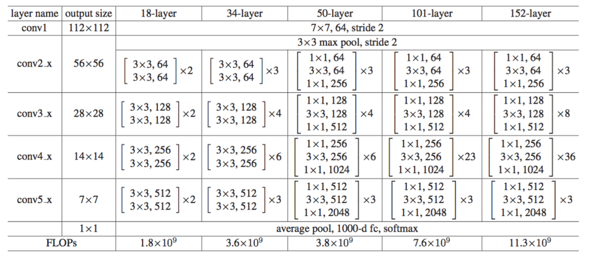

论文：Deep Residual Learning for Image Recognition
作者：Kaiming He, Xiangyu Zhang, Shaoqing Ren, Jian Sun
Resnet的思想是直接学习输入输出的残差表示，而不是直接学习输入输出的映射。实验证明相比直接学习输入输出映射，学习残差的收敛速度更快，还能够通过使用更多的层数达到更高的分类精度。
1. Motivation
直观上觉得网络越深越复杂参数越多表达能力就越强，但CNN分类网络从7层的 Alexnet，到16层和19层的VGG，再到22层的GoogleNet后，发现网络达到一定深度后如果再增加层数，性能并不会提高，收敛速度反而会变慢，分类准确度也会下降，这种下降并不是由过拟合引起的，因为网络层数增加时训练误差在迅速下降，我们把这种现象称为“退化”。
为了解决退化问题，Resnet不再让网络直接拟合期望的底层映射，而是让这些层拟合残差映射。设输入为
$X$ ，为了得到期望的输入输出映射 $H(X)$ ，Resnet选择拟合 $F(X) = H(X) - X$ ，进而得到 $H(X) = F(X) + X$ ，残差映射比原始映射更容易优化，因为如果一个恒等映射是最优的，那么把残差置为0比用一堆非线性层拟合恒等映射要容易得多。
Resnet 通过“shortcut”来学习 $F(X) = H(X) - X$ ，Shortcut是指跳过一层或多层的连接，简单地恒等映射，将输出直接添加到几层之后的输出上，既不增加参数也不增加计算复杂度。通过堆叠残差块成功训练出了超过100层的模型，152层残差网络在ImageNet测试集上的top-5错误率为3.57%，层数比VGG深，但复杂性比VGG低，是ILSVRC 2015的第一名。
2. Shortcut
$x$ 和 $y$ 是输入和几个层之后的输出，函数 $F(x, W_i)$ 表示要学习的残差映射，下图的例子为两层， $F = W_2 \sigma(W_1x)$ ，其中激活函数 $\sigma$ 为ReLU。$F(x) + x$ 通过 shortcut 将两部分相加后，再经过激活函数 ReLU。 这个过程除了两部分元素的加法之外没有引入参数也没有增加计算复杂度：
$x$ 和 $F(x)$ 的维度必须是相等的，如果不相等时可以通过 $W_s$ 来匹配维度，即:
backbone 的设计主要受VGG启发，主要用3x3的卷积核，下采样stride为2，如果输出特征图大小不变，则filter个数不变，即输出channel和输入channel数一样；如果输出的特征图大小减半，那么filter数量加倍，即输出channel数变为原来的两倍，以此保证了每层的时间复杂度。
Resnet-34 中加权层总数为34，36亿FLOPs，是VGG-19 (196亿FLOPs)的18%，网络架构如下图，通过在简单网络上加shortcut 转化为resnet，当输入和输出维度相同时，可以直接用恒等连接，图中用实线表示：当维度增加时，图中用虚线表示，stride=2，此时有两种选择：（1）仍用恒等映射，缺少的维度用0填充，这样不会引入额外的参数；（2）用1x1的卷积匹配维度。
论文对比了三种shortcut方法：（A）零填充增加维度，其余恒等；（B）投影shortcut增加维度，其他恒等；（C）所有shortcut都投影。对比结果发现C 比 B 略好，B 比 A 略好，差异细微，所以论文没用C：
3. Resnet网络变种

Resnet 18 实现及改进细节：
- 每一块卷积层有2个resnet block（3x3, 3x3），只对第一个resnet block的shortcut 做1x1卷积（有bn，无ReLU）的投影。为什么只对第一个做，因为需要通过改变feather的形状，比如用 kernel = 1x1, stride = 2, output channel *= 2，使得shortcut的X和几层卷积后的输出形状能够匹配。
- 对2个3x3串联的resnet block，在加shortcut送来的输入X之前，先给3x3卷积的输出加一个ReLU，然后加shortcut后再加一个ReLU。
- 每块卷积里的第一个resnet block的第一个3x3卷积负责改变特征大小，将size变为原来的一半，channel数变为原来的2倍。
- 把第二层3x3的max pooling换成3x3的卷积，stride=2，输出size减半，channel数不变。
4. bottleneck
在构建更深的网络结构时，残差块改为了bottleneck残差块，用1x1, 3x3 和 1x1 三层卷积堆叠，1x1负责先减小再恢复维度，使得3x3层有较小的输入输出维度，如下图中左边是 ResNet-34的残差块，右边是ResNet-50/101/152 的bottleneck残差块，两种设计有相似的时间复杂度：
残差函数 $F(x)$ 的形式还可以调整，也可以有更多的层，当 $F(x)$ 只有一层时起不到残差块的效果，因为此时类似于线性层 $y=W_1 x + x$ 。